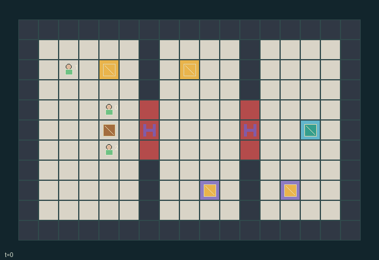

GI072 · Twin-Grip Lockway

Bring the shared pallet to [14,5] and all three workers into x>=12.
Identity and original contract
3 independently actionable roles; 9 discrete commands per role; 1876 native observation columns per role; original horizon 192 steps. Declared per-step reward range: -0.005 to 1. Observation regime: fully_observable.
Source SHA-256: 338682ead446d6010c428c97ad959472aef964a88c505928d2a51bb3067efed8
The objective, rewards, population, map and horizon remain original. A preview is not a success claim.
Objective and gameplay
Bring the shared pallet to [14,5] and all three workers into x>=12.
Two opposite-flank workers must request the same cardinal haul. Actual plate occupancy controls gate passability; occupied apertures prevent crushing. Movement and handover require real positions.
- Three workers must bring the one real pallet to its berth and all cross into the east chamber.
- Two workers on opposite flanks must choose the same HAUL direction. The two workers and pallet then translate together by one cell.
- Standing on either associated pressure plate opens a gate for the next action. Occupied apertures remain open until empty.
- Walking reads old occupancy: no swaps or following. Conflicting free-cell targets fail; accepted hauling reserves its destinations.
- Animate only changes in actual positions, plate occupancy, gate state and recorded events. An unexecuted script is never gameplay evidence.
- The map and active entities are public. Event and action-outcome annotations are debug diagnostics; the policy still receives only the declared 1876 columns.
- Natural completion precedes the 192-step limit. Already-ended raw states are absorbing and must not replay their last event as new motion.
Ending: Success requires actual pallet berth occupancy and all workers east of gate 1; no early natural failure. Natural completion precedes the 192-step limit.
What this game explores
Joint transport & shared access: Positions, load geometry, occupancy and persistent access constrain whose action can succeed next. Distinguish physical handoff, shared controls and simultaneous force from a cosmetic cooperation label.
These are questions supported by rule structure, not observed learning effects.
Play it: operating walkthrough
crucibles play --game gi072Keep Python running and open its printed address. Select this game, set a seed and press Create session. The game itself is always English.
Assign a role range to Host with Assign / take over, or Assign all roles. Invite a second participant with Create player invitation, then assign a disjoint subset. Every original role is available.
For every owned role choose a legal command and press Queue. Arrow keys / WASD queue a declared directional action for the current role camera when available. Space or Advance one joint step advances everyone together. Non-directional games use the selectors.
Unqueued roles use the labelled untrained uniform-legal policy. Take over or release roles before the next step without resetting. Full-state debug is privileged and permanently logged; role cameras preserve permissions. Close the session to retain logs. Server restart does not restore sessions.
Complete command reference
IDs and English labels exactly match the manifest. Availability depends on role, resources, location and phase. An available action can still have no productive effect.
0·WAIT — Remain in place.
1·MOVE_N — Propose [0,-1] ordinary movement.
2·MOVE_E — Propose [1,0] ordinary movement.
3·MOVE_S — Propose [0,1] ordinary movement.
4·MOVE_W — Propose [-1,0] ordinary movement.
5·HAUL_N — Request a joint pallet translation [0,-1].
6·HAUL_E — Request a joint pallet translation [1,0].
7·HAUL_S — Request a joint pallet translation [0,1].
8·HAUL_W — Request a joint pallet translation [-1,0].
Roles and capability identifiers
These original role names describe capabilities, not interchangeable skins. Check each owned role's legal selector before planning handoffs.
agent_0·Interchangeable worker: walk, jointly haul, or hold a pressure plate.
agent_1·Interchangeable worker: walk, jointly haul, or hold a pressure plate.
agent_2·Interchangeable worker: walk, jointly haul, or hold a pressure plate.
Information and observation permissions
Every active entity and the complete map are public. Flattened observations contain only the declared current grid, own identity, time, and plate counts; no pending actions or diagnostic events.
The GIF is full-state debug and may reveal hidden entities or private state. Train on obs[agent], not the picture, state tree or another role's private row. Field slices and visibility are in the original manifest.
Reinforcement-learning integration
import jax
from crucibles_jaxmarl import make
env = make("gi072")
key = jax.random.PRNGKey(0)
key, rk, ak, sk = jax.random.split(key, 4)
obs, state = jax.jit(env.reset)(rk)
actions = env.sample_actions(ak, state)
obs, state, rewards, dones, info = jax.jit(env.step_env)(sk, state, actions)
done = dones["__all__"]Observations are float32 vectors of width 1876; actions are scalar int32; masks have 9 entries. Supply all 3 roles each transition. Masked sampling is an engineering reference, not a trained learner.
step_env retains terminal data without reset. step performs outer autoreset and keeps terminal data in info["raw_state"] and info["raw_observation"]. Use dones["__all__"] for episode boundaries; separate completion, failure and time limit in analysis.
JIT or vmap equal identities and shapes. Split independent reset, policy and transition keys. Group different shapes explicitly; do not shrink the population or horizon. Host rendering stays outside training.
Training questions and fair evaluation
Define valid completion from the objective before fitting. Preserve original rewards and also report real deliveries/services, losses, resource state, unresolved episodes and per-role returns. Animation is not a reward signal.
Positions, load geometry, occupancy and persistent access constrain whose action can succeed next. Distinguish physical handoff, shared controls and simultaneous force from a cosmetic cooperation label.
Compare memory, communication or centralized critics under matched actor information. Declare critic access; keep actor inputs role-filtered. Match partner/opponent distributions, masks, compute and checkpoint selection. Final tests never enter fitting or selection.
Independent training runs or source-pairing blocks are inferential units; episodes from one policy are not independent training replications. Save hashes, keys, versions, device, time and cost. Negative, zero, failed and indeterminate outcomes are valid. No trained checkpoint or target score is supplied.
Classification and evidence
Overlapping editorial labels are reading aids, not proof of novelty, difficulty, strategic equivalence or learning effects.
- Joint transport & shared access
- Evidence
manifest.task.objective: Bring the shared pallet to [14,5] and all three workers into x>=12.
- Evidence
manifest.task.interaction: Two opposite-flank workers must request the same cardinal haul. Actual plate occupancy controls gate passability; occupied apertures prevent crushing. Movement and handover require real positions.
- Evidence
manifest.actions.5: HAUL_N — Request a joint pallet translation [0,-1].
Source, receipts and preview limits
The world-only English GIF replays saved untrained legal actions through the original kernel. At most 25 actual endpoints include initial and terminal state; no invented interpolation. It is full-state debug, not the role observation.
Original source, observation slices, manifest and mechanism
Native receipt · Presentation receipt
Engineering passes do not establish learning. Nonzero floating differences remain recorded and undetermined; no new tolerance was introduced. Human scores remain unverified.